pacman::p_load(arrow, lubridate, tidyverse, sf, sfdep, sp, spNetwork, spdep, raster, spatstat, tmap, readxl, plotly)Take-home_Ex3: Prototyping Modules for Geospatial Analytics Shiny Application
1. Introduction
This take-home exercise will be showcasing the analysis we will be working in our project. Also, it will include the storyboard of our project in terms of the UI design and prototype of our Shiny Application.
In the following part, I will be analyse the types of recycling facilities in Hong Kong. Further on, I will conduct Network Kernal Density Estimate (NKDE) for our project.
2. Analysis on the type of recycling facilities in Hong Kong
2.1 Getting Started
osm_basemap <- tm_basemap(server = "OpenStreetMap.HOT")
imagery_basemap <- tm_basemap(server = "Esri.WorldImagery")2.2 Importing Data
2.2.1 Aspatial Data
hk_census <- read_excel("data/aspatial/hkcensus.xlsx")2.2.2 Geospatial Data
2.2.2.1 Cycling Points in Hong Kong
cp <- read_csv("data/aspatial/hkrecyclepoints.csv")Change the geographic location
cp_sf <- st_as_sf(cp,
coords = c("lgt","lat"),
crs = 4326) %>%
st_transform(crs= 2326)summary(cp_sf) cp_id district_id address_en address2_en
Min. : 283 Length:6520 Length:6520 Length:6520
1st Qu.: 3615 Class :character Class :character Class :character
Median : 6652 Mode :character Mode :character Mode :character
Mean : 6127
3rd Qu.: 8516
Max. :10764
waste_type legend geometry
Length:6520 Length:6520 POINT :6520
Class :character Class :character epsg:2326 : 0
Mode :character Mode :character +proj=tmer...: 0
plot(st_geometry(cp_sf))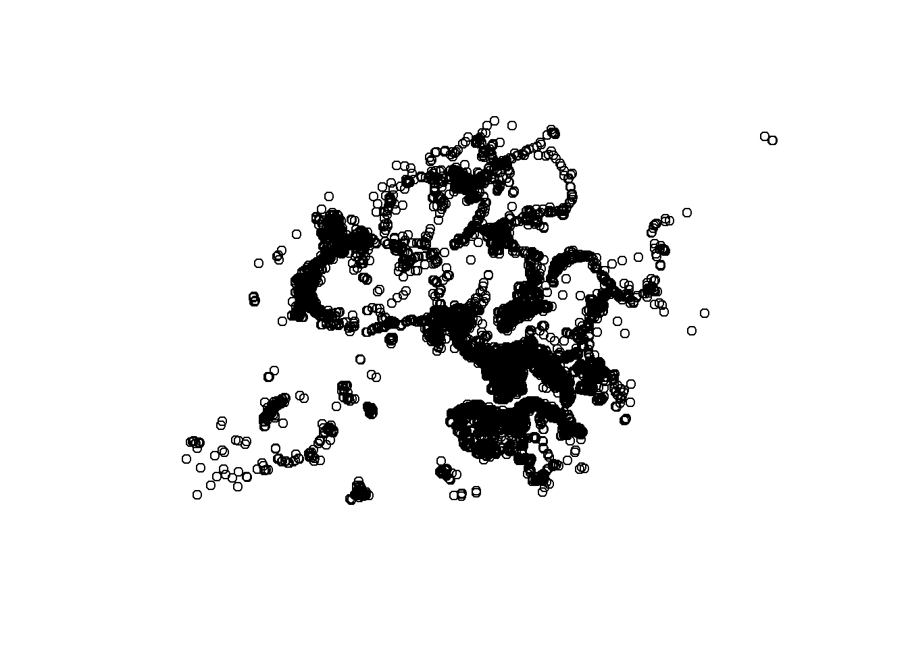
tmap_mode('plot')
tm_shape(cp_sf)+
tm_dots()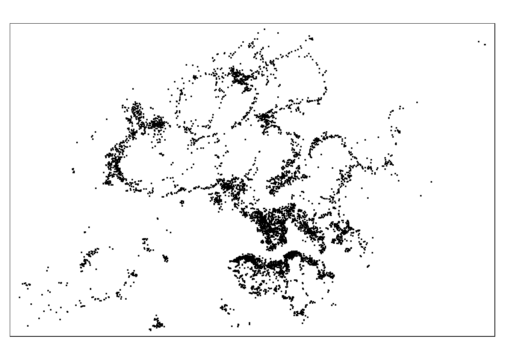
2.2.2.2 18 Districts in Hong Kong
district_18 <- st_read(dsn = "data/geospatial/hk_18Districts/",
layer = "HKDistrict18" )Reading layer `HKDistrict18' from data source
`C:\Users\Kachel Lee\ka33rina\IS415GAA\Take-home_Ex\Take-home_Ex3\data\geospatial\hk_18Districts'
using driver `ESRI Shapefile'
Simple feature collection with 18 features and 4 fields
Geometry type: MULTIPOLYGON
Dimension: XY
Bounding box: xmin: 12672060 ymin: 2529946 xmax: 12739620 ymax: 2579129
Projected CRS: WGS 84 / Pseudo-Mercatorsf_district_18 <- district_18 %>% st_transform(crs = 2326)st_crs(sf_district_18)Coordinate Reference System:
User input: EPSG:2326
wkt:
PROJCRS["Hong Kong 1980 Grid System",
BASEGEOGCRS["Hong Kong 1980",
DATUM["Hong Kong 1980",
ELLIPSOID["International 1924",6378388,297,
LENGTHUNIT["metre",1]]],
PRIMEM["Greenwich",0,
ANGLEUNIT["degree",0.0174532925199433]],
ID["EPSG",4611]],
CONVERSION["Hong Kong 1980 Grid",
METHOD["Transverse Mercator",
ID["EPSG",9807]],
PARAMETER["Latitude of natural origin",22.3121333333333,
ANGLEUNIT["degree",0.0174532925199433],
ID["EPSG",8801]],
PARAMETER["Longitude of natural origin",114.178555555556,
ANGLEUNIT["degree",0.0174532925199433],
ID["EPSG",8802]],
PARAMETER["Scale factor at natural origin",1,
SCALEUNIT["unity",1],
ID["EPSG",8805]],
PARAMETER["False easting",836694.05,
LENGTHUNIT["metre",1],
ID["EPSG",8806]],
PARAMETER["False northing",819069.8,
LENGTHUNIT["metre",1],
ID["EPSG",8807]]],
CS[Cartesian,2],
AXIS["northing (N)",north,
ORDER[1],
LENGTHUNIT["metre",1]],
AXIS["easting (E)",east,
ORDER[2],
LENGTHUNIT["metre",1]],
USAGE[
SCOPE["Cadastre, engineering survey, topographic mapping (large scale)."],
AREA["China - Hong Kong - onshore and offshore."],
BBOX[22.13,113.76,22.58,114.51]],
ID["EPSG",2326]]plot(st_geometry(sf_district_18))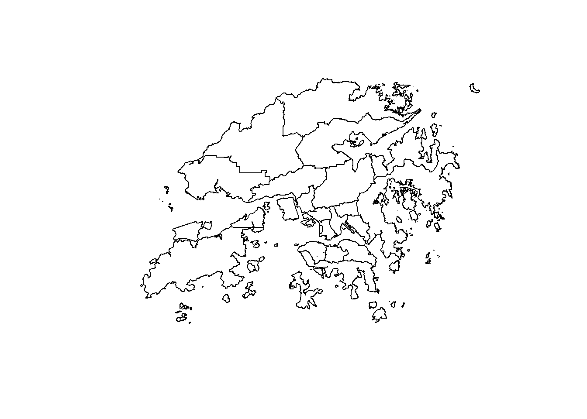
2.2.2.3 Road Data in Hong Kong
road_data <- st_read(dsn = "data/geospatial/china-latest-free.shp",
layer = "gis_osm_roads_free_1")Transform the Data into Hong Kong Projection System
road_data_2326 <- st_transform(road_data, 2326)roads_in_hk <- st_intersection(road_data_2326, sf_district_18)write_rds(roads_in_hk, "data/rds/sf_roads_in_hk.rds")roads_in_hk <- read_rds("data/rds/sf_roads_in_hk.rds")2.3 Types of Recycling Points in Hong Kong
unique_legends <- unique(cp_sf$legend)
# Print or inspect the unique values
print(unique_legends)[1] "Recycling Bins at Public Place"
[2] "Recycling Spots"
[3] "Private Collection Points (e.g. housing estates, shopping centres)"
[4] "NGO Collection Points"
[5] "Recycling Stations/Recycling Stores"
[6] "Street Corner Recycling Shops"
[7] NA
[8] "Smart Bin" There are 7 different types of recycling points in Hong Kong which are:
| Types of Recycling Points in Hong Kong |
|---|
| Recycling Bins at Public Place |
| Recycling Spots |
| Private Collection Points (e.g. housing estates, shopping centres) |
| NGO Collection Points |
| Recycling Stations/ Recycling Stores |
| Street Corner Recycling Shops |
| Smart Bin |
In order to join the data, we need to mutate the values of district_id in cp_sf in order to match with the values of ENAME in sf_district_id.
cp_sf_1 <- cp_sf %>%
mutate(district_id = toupper(str_replace_all(district_id, "_", " ")))recycling_bins <- subset(cp_sf_1, legend == "Recycling Bins at Public Place")
recycling_spots <- subset(cp_sf_1, legend == "Recycling Spots")
private_collection_points <- subset(cp_sf_1, legend == "Private Collection Points (e.g. housing estates, shopping centres)")
ngo_collection_points <- subset(cp_sf_1, legend == "NGO Collection Points")
recycling_stations <- subset(cp_sf_1, legend == "Recycling Stations/Recycling Stores")
street_corner_recycling_shops <- subset(cp_sf_1, legend == "Street Corner Recycling Shops")
smart_bins <- subset(cp_sf_1, legend == "Smart Bin")recycling_spots_cp <- st_join(sf_district_18, recycling_spots)
ngo_cp <- st_join(sf_district_18, ngo_collection_points)
pcp_joined_data <- st_join(sf_district_18, private_collection_points)
recycling_bins_cp <- st_join(sf_district_18, recycling_bins)
recycling_stations_cp <- st_join(sf_district_18, recycling_stations)
street_corner_cp <- st_join(sf_district_18, street_corner_recycling_shops)
smart_bins_cp <- st_join(sf_district_18, smart_bins)private_collection_points_by_district <- pcp_joined_data %>%
group_by(ENAME) %>%
summarize(total_pcp = n())
ngo_cp_by_district <- ngo_cp %>%
group_by(ENAME) %>%
summarize(total_ngo_cp = n())
recycling_spots_by_district <- recycling_spots_cp %>%
group_by(ENAME) %>%
summarize(total_recycling_spots = n())
recycling_bins_by_district <- recycling_bins_cp %>%
group_by(ENAME) %>%
summarize(total_recycling_bins = n())
recycling_stations_by_district <- recycling_stations_cp %>%
group_by(ENAME) %>%
summarize(total_recycling_stations = n())
street_corner_shops_by_district <- street_corner_cp %>%
group_by(ENAME) %>%
summarize(total_street_corner = n())
smart_bins_by_district <- smart_bins_cp %>%
group_by(ENAME) %>%
summarize(total_smart_bins = n())pcp_map <- tm_shape(private_collection_points_by_district) +
tm_fill(col = "total_pcp") +
tm_borders() +
tm_layout(legend.show = TRUE, main.title = "Distribution of Private Collection Points by District",main.title.position = "center", main.title.size = 0.75)+
tm_scale_bar()ngo_cp_map <- tm_shape(ngo_cp_by_district) +
tm_fill(col = "total_ngo_cp") +
tm_borders() +
tm_layout(legend.show = TRUE, main.title = "Distribution of NGO Points by District", main.title.position = "center", main.title.size = 0.75)+
tm_scale_bar()recycling_spots_map <- tm_shape(recycling_spots_by_district) +
tm_fill(col = "total_recycling_spots") +
tm_borders() +
tm_layout(legend.show = TRUE, main.title = "Distribution of Recycling Spots by District",main.title.position = "center", main.title.size = 0.75)+
tm_scale_bar()recycling_bins_map <- tm_shape(recycling_bins_by_district) +
tm_fill(col = "total_recycling_bins") +
tm_borders() +
tm_layout(legend.show = TRUE, main.title = "Distribution of Recycling Bins by District", main.title.position = "center", main.title.size = 0.75)+
tm_scale_bar()recycling_stations_map <- tm_shape(recycling_stations_by_district) +
tm_fill(col = "total_recycling_stations") +
tm_borders() +
tm_layout(legend.show = TRUE, main.title = "Distribution of Recycling Stations by District", main.title.position = "center", main.title.size = 0.75)+
tm_scale_bar()street_corner_shops_map <- tm_shape(street_corner_shops_by_district) +
tm_fill(col = "total_street_corner") +
tm_borders() +
tm_layout(legend.show = TRUE,main.title = "Distribution of Street Corner Shops by District", main.title.position = "center", main.title.size = 0.75)+
tm_scale_bar()smart_bin_map <- tm_shape(smart_bins_by_district) +
tm_fill(col = "total_smart_bins") +
tm_borders() +
tm_layout(legend.show = TRUE,main.title = "Distribution of Smart Bins by District",main.title.position = "center", main.title.size = 0.75)+
tm_scale_bar()smart_bin_map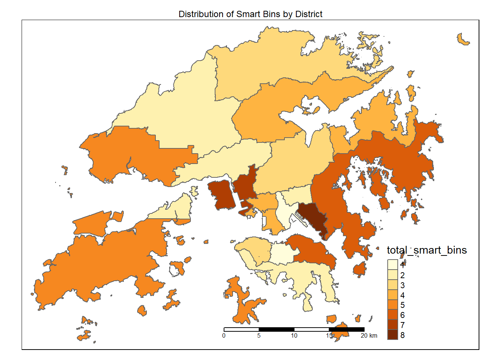
tmap_arrange(pcp_map,recycling_spots_map, recycling_bins_map, ncol=2)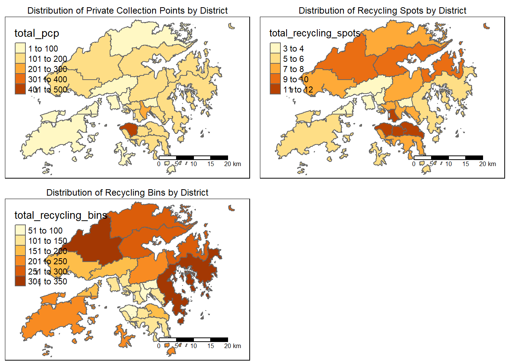
tmap_arrange(ngo_cp_map, recycling_stations_map, street_corner_shops_map, smart_bin_map, ncol = 2)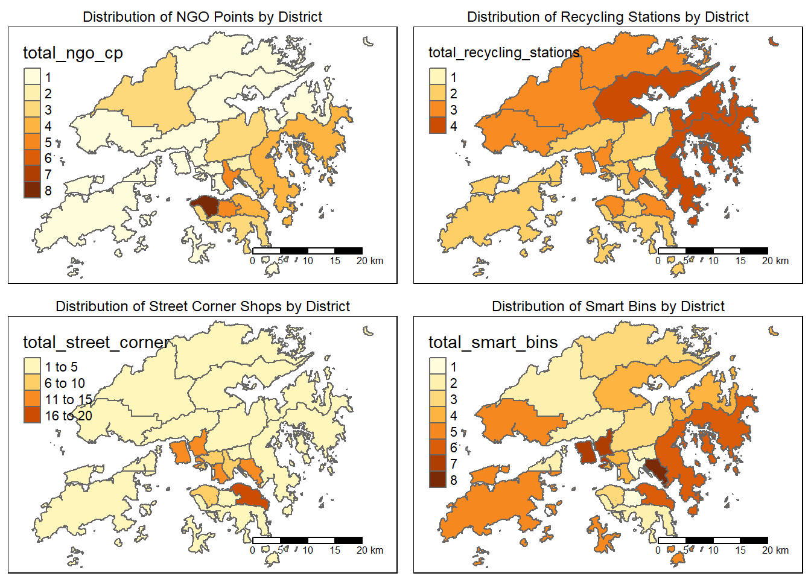
Private Collection Points
wm_q_pcp <- private_collection_points_by_district %>%
mutate(nb = st_contiguity(geometry, queen = TRUE),
wt = st_weights(nb,
style = "W",
allow_zero = TRUE),
.before = 1)
wm_q_pcpSimple feature collection with 18 features and 4 fields
Geometry type: MULTIPOLYGON
Dimension: XY
Bounding box: xmin: 801026 ymin: 801678 xmax: 863539.9 ymax: 846903.1
Projected CRS: Hong Kong 1980 Grid System
# A tibble: 18 × 5
nb wt ENAME total_pcp geometry
* <nb> <list> <chr> <int> <MULTIPOLYGON [m]>
1 <int [2]> <dbl [2]> CENTRAL & WESTERN 414 (((833047.3 816838.9, 833488…
2 <int [2]> <dbl [2]> EASTERN 200 (((843535.7 812736.3, 843530…
3 <int [1]> <dbl [1]> ISLANDS 46 (((810029 801683.4, 810019.4…
4 <int [5]> <dbl [5]> KOWLOON CITY 243 (((836281 823326.3, 836283 8…
5 <int [3]> <dbl [3]> KWAI TSING 87 (((827834 820693.1, 827834 8…
6 <int [3]> <dbl [3]> KWUN TONG 119 (((843155.9 816368.9, 843154…
7 <int [2]> <dbl [2]> NORTH 97 (((852615.5 841161.9, 852615…
8 <int [4]> <dbl [4]> SAI KUNG 163 (((840825.4 823785.4, 840827…
9 <int [7]> <dbl [7]> SHA TIN 194 (((839924.4 832031.6, 839924…
10 <int [4]> <dbl [4]> SHAM SHUI PO 190 (((834919.6 823272.4, 834921…
11 <int [3]> <dbl [3]> SOUTHERN 181 (((830176.1 815000.2, 830255…
12 <int [5]> <dbl [5]> TAI PO 121 (((846104.6 830686.6, 846265…
13 <int [6]> <dbl [6]> TSUEN WAN 92 (((821762.8 819430, 821765.7…
14 <int [2]> <dbl [2]> TUEN MUN 165 (((811619.1 831909.9, 811639…
15 <int [3]> <dbl [3]> WAN CHAI 198 (((838663.3 815002.8, 838700…
16 <int [4]> <dbl [4]> WONG TAI SIN 82 (((836530.5 823327.5, 836533…
17 <int [2]> <dbl [2]> YAU TSIM MONG 116 (((835145.2 817859.4, 835137…
18 <int [4]> <dbl [4]> YUEN LONG 178 (((811708.8 831974.4, 811719…set.seed(1234)
global_moran_perm(wm_q_pcp$total_pcp,
wm_q_pcp$nb,
wm_q_pcp$wt,
zero.policy = TRUE,
nsim = 999)
Monte-Carlo simulation of Moran I
data: x
weights: listw
number of simulations + 1: 1000
statistic = 0.16065, observed rank = 934, p-value = 0.132
alternative hypothesis: two.sidedlisa_pcp <- wm_q_pcp %>%
mutate(local_moran = local_moran(
total_pcp, nb, wt, zero.policy = TRUE, nsim = 99),
.before = 1) %>%
unnest(local_moran)lisa_sig_pcp <- lisa_pcp %>%
filter(p_ii < 0.05)
tmap_mode("plot")
tm_shape(lisa_pcp) +
tm_polygons() +
tm_borders(alpha = 0.7) +
tm_shape(lisa_pcp) +
tm_fill("mean") +
tm_borders(alpha = 0.4)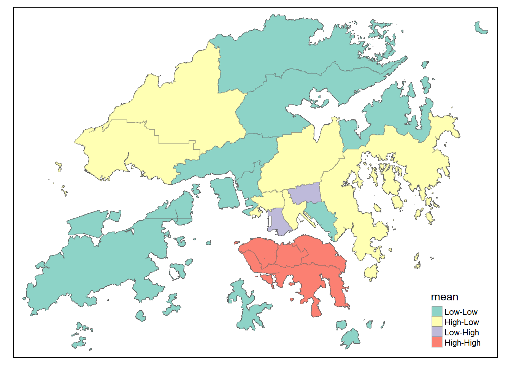
Recycling Spots
wm_q_rspots <- recycling_spots_by_district %>%
mutate(nb = st_contiguity(geometry, queen = TRUE),
wt = st_weights(nb,
style = "W",
allow_zero = TRUE),
.before = 1)
wm_q_rspotsSimple feature collection with 18 features and 4 fields
Geometry type: MULTIPOLYGON
Dimension: XY
Bounding box: xmin: 801026 ymin: 801678 xmax: 863539.9 ymax: 846903.1
Projected CRS: Hong Kong 1980 Grid System
# A tibble: 18 × 5
nb wt ENAME total_recycling_spots geometry
* <nb> <list> <chr> <int> <MULTIPOLYGON [m]>
1 <int [2]> <dbl [2]> CENTRAL … 12 (((833047.3 816838.9, 83…
2 <int [2]> <dbl [2]> EASTERN 11 (((843535.7 812736.3, 84…
3 <int [1]> <dbl [1]> ISLANDS 6 (((810029 801683.4, 8100…
4 <int [5]> <dbl [5]> KOWLOON … 7 (((836281 823326.3, 8362…
5 <int [3]> <dbl [3]> KWAI TSI… 4 (((827834 820693.1, 8278…
6 <int [3]> <dbl [3]> KWUN TONG 8 (((843155.9 816368.9, 84…
7 <int [2]> <dbl [2]> NORTH 8 (((852615.5 841161.9, 85…
8 <int [4]> <dbl [4]> SAI KUNG 6 (((840825.4 823785.4, 84…
9 <int [7]> <dbl [7]> SHA TIN 7 (((839924.4 832031.6, 83…
10 <int [4]> <dbl [4]> SHAM SHU… 7 (((834919.6 823272.4, 83…
11 <int [3]> <dbl [3]> SOUTHERN 8 (((830176.1 815000.2, 83…
12 <int [5]> <dbl [5]> TAI PO 9 (((846104.6 830686.6, 84…
13 <int [6]> <dbl [6]> TSUEN WAN 3 (((821762.8 819430, 8217…
14 <int [2]> <dbl [2]> TUEN MUN 7 (((811619.1 831909.9, 81…
15 <int [3]> <dbl [3]> WAN CHAI 12 (((838663.3 815002.8, 83…
16 <int [4]> <dbl [4]> WONG TAI… 4 (((836530.5 823327.5, 83…
17 <int [2]> <dbl [2]> YAU TSIM… 11 (((835145.2 817859.4, 83…
18 <int [4]> <dbl [4]> YUEN LONG 9 (((811708.8 831974.4, 81…set.seed(1234)
global_moran_perm(wm_q_rspots$total_recycling_spots,
wm_q_rspots$nb,
wm_q_rspots$wt,
zero.policy = TRUE,
nsim = 999)
Monte-Carlo simulation of Moran I
data: x
weights: listw
number of simulations + 1: 1000
statistic = 0.42312, observed rank = 991, p-value = 0.018
alternative hypothesis: two.sidedlisa_rspots <- wm_q_rspots %>%
mutate(local_moran = local_moran(
total_recycling_spots, nb, wt, zero.policy = TRUE, nsim = 99),
.before = 1) %>%
unnest(local_moran)lisa_sig_rspots <- lisa_rspots %>%
filter(p_ii < 0.05)
tmap_mode("plot")
tm_shape(lisa_rspots) +
tm_polygons() +
tm_borders(alpha = 0.7) +
tm_shape(lisa_rspots) +
tm_fill("mean") +
tm_borders(alpha = 0.4)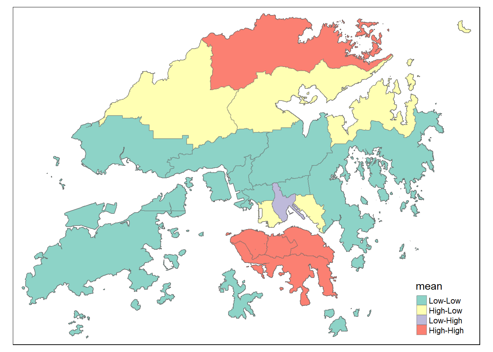
2.4 NKDE
unique_types <- unique(st_geometry_type(roads_in_hk))print(unique_types)[1] LINESTRING MULTILINESTRING
18 Levels: GEOMETRY POINT LINESTRING POLYGON MULTIPOINT ... TRIANGLEif ("LINESTRING" %in% unique_types) {
roads_in_hk <- st_cast(roads_in_hk, "LINESTRING")
} else {
# handle the case when no linestrings are found
stop("No linestrings found in roads_in_hk")
}unique_types <- unique(st_geometry_type(roads_in_hk))roads_in_hk <- roads_in_hk[st_geometry_type(roads_in_hk) == "LINESTRING", ]lixels_hk <- lixelize_lines(roads_in_hk,750, mindist = 375)samples_hk <- lines_center(lixels_hk)densities <- nkde(roads_in_hk,
events = cp_sf,
w = rep(1,nrow(cp_sf)),
samples = samples_hk,
kernel_name = "quartic",
bw = 300,
div= "bw",
method = "simple",
digits = 1,
tol = 1,
grid_shape = c(1,1),
max_depth = 8,
agg = 5, #we aggregate events within a 5m radius (faster calculation)
sparse = TRUE,
verbose = FALSE)samples_hk$density <- densities
lixels_hk$density <- densities
samples_hk$density <- samples_tm$density*1000
lixels_hk$density <- lixels_tm$density*1000
tmap_mode("view")
tm_shape(lixels_hk)+
tm_lines(col="density")+
tm_shape(cp_sf)+
tm_dots(alpha=0.1) +
tm_basemap("OpenStreetMap")3. Storyboard
For our project, we will be analysing the recycling points in Hong Kong and observe its distribution over the 18 districts in Hong Kong. Afterwards, we will further analyse on the districts with high adn low density. We hope to seek to identify the gaps in coverage and areas with lack of recycling facilities. Therefore, in our application, we hope to visualize the recycling facilities in each district.
The next part will go through the features and design of our application.
4. UI Design & Prototype
This is will be the UI design of our Shiny App.
Home Page
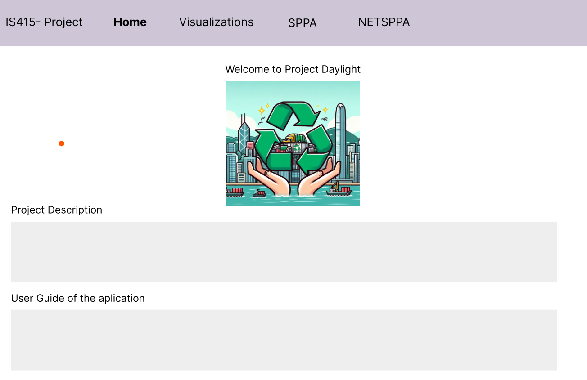
Visualization Page
This will be the Visualization Tab where users are able to have idea of the locations of recycling points. We have include some interaction features such as drop-down menu for them to select their desirable districts and recyclables that they want to recycle.
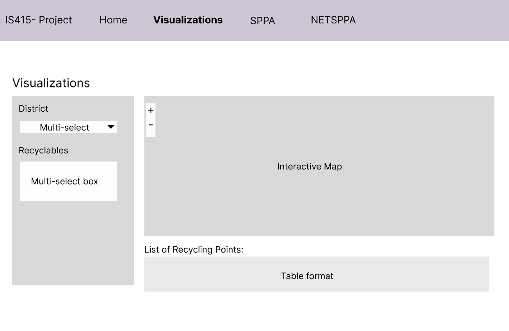
Analysis Pages: SPAA & NETSPAA
The following 2 pages also include interactive feature such as drop-down menu for the districts that we do our analysis on.
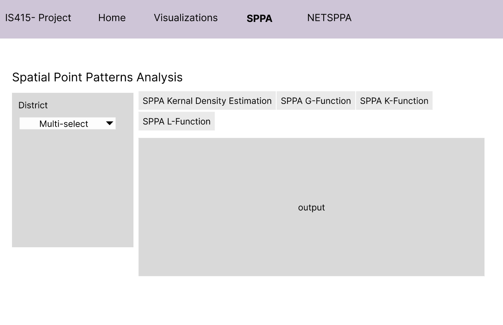
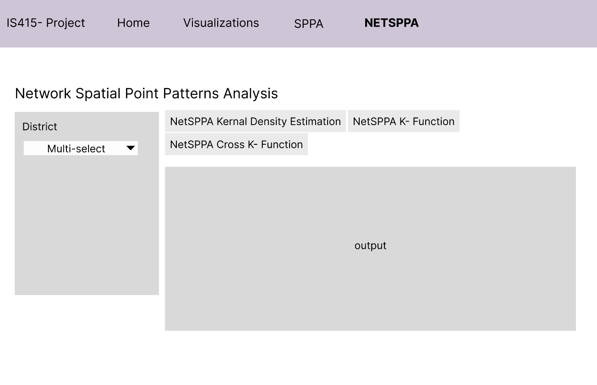